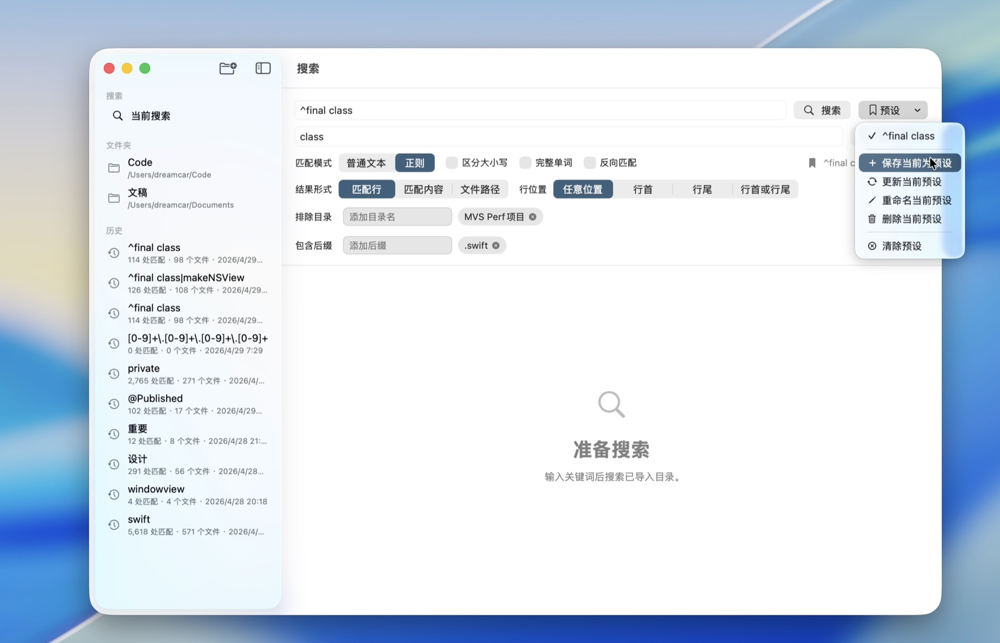

导入文件夹
选择一个或多个本地目录，应用会保存 macOS 安全书签，下次启动仍可继续访问。
macOS 本地搜索工具
把 grep 的力量变成清爽的 Mac 应用。搜索源码、日志、配置、笔记和文档，精确定位内容，安全预览替换，所有处理都留在你的 Mac 上。
不需要记复杂参数，也不用在终端输出里来回翻找。GrepFiles 把常用搜索、筛选、复制、导出和替换动作整理成可见、可复用、可确认的流程。
GrepFiles 的搜索和帮助功能不需要网络连接，不会把查询、路径或文件内容发送到服务器。
选择一个或多个本地目录，应用会保存 macOS 安全书签，下次启动仍可继续访问。
用普通文本快速查找固定内容，或切换正则表达式处理更复杂的匹配规则。
按大小写、完整单词、反向匹配、行首行尾、文件后缀和排除目录精确过滤。
复制匹配文本、整行或文件位置，导出报告，或先预览再批量写入替换。
完整功能
从一次性搜索到长期维护项目，GrepFiles 都能覆盖常见场景，并尽量减少误操作成本。
固定关键词、日志片段、配置键适合普通模式；复杂模式可用正则表达式和捕获组。
查看匹配行、只看匹配内容，或只输出命中文件路径，覆盖阅读、统计和清单整理。
把查询、模式、文件夹范围、排除目录、包含后缀和结果形式保存为可复用配置。
最近搜索会保留查询、结果、路径和高亮范围，回看历史时无需重新跑一遍搜索。
替换前按文件和匹配项预览，可逐项勾选；写入前会检查文件是否被外部修改。
一键复制匹配文本、整行、文件路径加行号，并导出 Markdown、CSV、JSON 或纯文本。
只搜索指定后缀，跳过构建目录、依赖目录和自定义目录，让结果更干净。
在 macOS 可提取正文时，`.docx` 也可以纳入只读搜索范围，适合文档资产检索。
真实界面截图
页面使用应用现有截图素材制作，展示搜索、正则、替换预览、历史、预设和帮助等核心视图。
导入多个目录后输入关键词，即可按文件分组查看匹配行、行号和高亮范围。适合源码、日志、笔记和配置文件的日常检索。

搜索预设会记住查询、模式、文件夹范围、后缀和排除项。每天都要跑的检查，下一次不用从头配置。
结果按文件分组，可展开或折叠，文件标题显示来源目录和匹配数量，方便快速扫描。
搜索、替换、导出、排除规则、隐私与安全都有说明，新用户也能快速建立正确使用方式。
隐私与安全
GrepFiles 的搜索和帮助功能不需要网络连接，不会把查询、路径或文件内容发送到服务器。导入目录通过 macOS 沙盒授权，移除目录不会删除磁盘文件。
批量替换会先展示替换前后内容，并允许按文件或单个匹配项勾选。
应用会检查文件大小、修改时间、内容指纹和原匹配文本，避免覆盖外部改动。
最近一次成功替换会保留内存撤销快照，降低批量修改带来的心理负担。
隐私政策
以下说明基于当前应用功能：本地搜索、本地历史、macOS 沙盒授权、安全书签、结果导出与可确认的批量替换。
生效日期：2026年4月30日应用会读取你主动导入或通过预设授权的文件夹，处理查询词、搜索选项、匹配结果、替换预览、导出内容和本地历史记录。
这些信息仅用于在本机完成搜索、显示结果、复制或导出报告、准备替换预览、执行用户确认的替换以及恢复历史快照。
当前网页所描述的 GrepFiles 功能不需要账户、云端索引、远程渲染或文件上传；应用不会把查询、路径或文件内容发送到服务器。
导入目录、安全书签、搜索预设、最近历史和替换记录保存在这台 Mac 的应用数据中。删除历史项或移除目录只会改变应用状态，不会删除磁盘文件。
你可以选择导入哪些文件夹、移除目录授权、清理历史、取消替换候选项，并决定是否复制或导出结果。
如果未来版本加入同步、账户、分析或其他网络功能，应同步更新本政策和发布说明，让网页描述与实际行为保持一致。
适合购买的人
它不是一次性的炫技工具，而是每天都能减少上下文切换的生产力工具。
在代码库里查找 API、配置键、错误文案和历史遗留逻辑，结果可直接定位到文件。
批量检查术语、标题、链接片段和版本号，导出报告方便审阅与交付。
快速检索日志、测试数据和说明文档，按路径和行号把证据整理清楚。
在多个项目目录中统一查找和替换文本，先确认影响范围再写入文件。
购买理由
如果你经常在源码、日志、配置和文档之间来回搜索，GrepFiles 能把零散命令、临时脚本和复制粘贴整理成一个清楚的 Mac 应用。
常见问题
不会。搜索在本机完成，查询、路径和文件内容不会发送到服务器。
可以。先完成搜索，再准备替换预览；你可以按文件或匹配项勾选，确认后才会写入。
可以导出为 Markdown、CSV、JSON 或纯文本，也可以复制匹配文本、整行或文件路径加行号。
可以添加包含后缀，例如 `.swift`、`.md` 或 `.docx`。列表为空时会搜索所有未被规则跳过的可读文本文件。